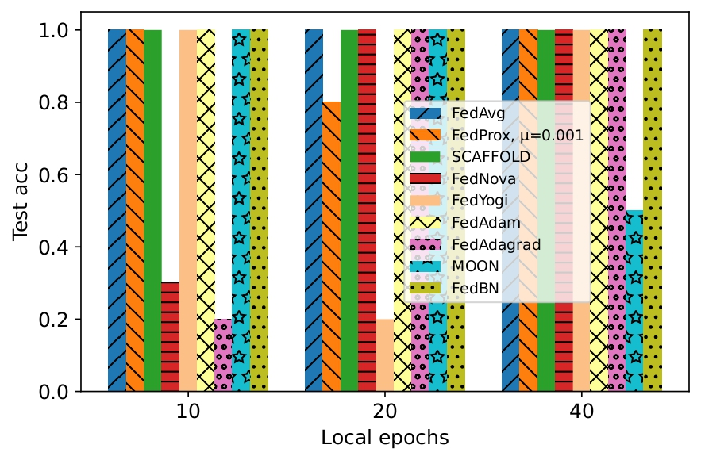

A Benchmark Study on Realistic Non-IID Data Silos
Fundamentals and Experimental Analysis of Federated Learning Algorithms
Coming
Abstract
 Dataset Information
Dataset Information
| Datasets | #training instances | #test instances | #features | #classes |
|---|---|---|---|---|
| MNIST | 60,000 | 10,000 | 784 | 10 |
| FMNIST | 60,000 | 10,000 | 784 | 10 |
| CIFAR-10 | 50,000 | 10,000 | 3,072 | 10 |
| CIFAR-100 | 50,000 | 10,000 | 3,072 | 100 |
| SVHN | 73,257 | 26,032 | 3,072 | 10 |
| CINIC10 | 90,000 | 90,000 | 3,072 | 10 |
| FED-ISIC2019 | 18,597 | 4,650 | 3,072 | 8 |
| Adult | 26,048 | 6,512 | 99 | 2 |
| FCUBE | 4,000 | 1,000 | 3 | 2 |
| FEMNIST | 649,184 | 165,093 | 784 | 62 |
 Performance
Performance
 Federated Learning Algorithms Comparison Table
Federated Learning Algorithms Comparison Table
| CATEGORY | DATASET | PARTITIONING | FedAvg | FedProx | SCAFFOLD | FedNova | FedAdagrad | FedYogi | FedAdam | MOON | FedBN |
|---|---|---|---|---|---|---|---|---|---|---|---|
| Label distribution skew | MNIST | pk ~ Dir(0.5) | % ± % | % ± % | % ± % | % ± % | % ± % | % ± % | % ± % | % ± % | % ± % |
| #C = 1 | % ± % | % ± % | % ± % | % ± % | % ± % | % ± % | % ± % | % ± % | % ± % | ||
| #C = 2 | % ± % | % ± % | % ± % | % ± % | % ± % | % ± % | % ± % | % ± % | % ± % | ||
| #C = 3 | % ± % | % ± % | % ± % | % ± % | % ± % | % ± % | % ± % | % ± % | % ± % | ||
| FMNIST | pk ~ Dir(0.5) | % ± % | % ± % | % ± % | % ± % | % ± % | % ± % | % ± % | % ± % | % ± % | |
| #C = 1 | % ± % | % ± % | % ± % | % ± % | % ± % | % ± % | % ± % | % ± % | % ± % | ||
| #C = 2 | % ± % | % ± % | % ± % | % ± % | % ± % | % ± % | % ± % | % ± % | % ± % | ||
| #C = 3 | % ± % | % ± % | % ± % | % ± % | % ± % | % ± % | % ± % | % ± % | % ± % | ||
| SVHN | pk ~ Dir(0.5) | % ± % | % ± % | % ± % | % ± % | % ± % | % ± % | % ± % | % ± % | % ± % | |
| #C = 1 | % ± % | % ± % | % ± % | % ± % | % ± % | % ± % | % ± % | % ± % | % ± % | ||
| #C = 2 | % ± % | % ± % | % ± % | % ± % | % ± % | % ± % | % ± % | % ± % | % ± % | ||
| #C = 3 | % ± % | % ± % | % ± % | % ± % | % ± % | % ± % | % ± % | % ± % | % ± % | ||
| CINIC10 | pk ~ Dir(0.5) | % ± % | % ± % | % ± % | % ± % | % ± % | % ± % | % ± % | % ± % | % ± % | |
| #C = 1 | % ± % | % ± % | % ± % | % ± % | % ± % | % ± % | % ± % | % ± % | % ± % | ||
| #C = 2 | % ± % | % ± % | % ± % | % ± % | % ± % | % ± % | % ± % | % ± % | % ± % | ||
| #C = 3 | % ± % | % ± % | % ± % | % ± % | % ± % | % ± % | % ± % | % ± % | % ± % | ||
| CIFAR10 | pk ~ Dir(0.5) | % ± % | % ± % | % ± % | % ± % | % ± % | % ± % | % ± % | % ± % | % ± % | |
| #C = 1 | % ± % | % ± % | % ± % | % ± % | % ± % | % ± % | % ± % | % ± % | % ± % | ||
| #C = 2 | % ± % | % ± % | % ± % | % ± % | % ± % | % ± % | % ± % | % ± % | % ± % | ||
| #C = 3 | % ± % | % ± % | % ± % | % ± % | % ± % | % ± % | % ± % | % ± % | % ± % | ||
| FedISIC2019 | pk ~ Dir(0.5) | % ± % | % ± % | % ± % | % ± % | % ± % | % ± % | % ± % | % ± % | % ± % | |
| #C = 1 | % ± % | % ± % | % ± % | % ± % | % ± % | % ± % | % ± % | % ± % | % ± % | ||
| #C = 2 | % ± % | % ± % | % ± % | % ± % | % ± % | % ± % | % ± % | % ± % | % ± % | ||
| #C = 3 | % ± % | % ± % | % ± % | % ± % | % ± % | % ± % | % ± % | % ± % | % ± % | ||
| CIFAR100 | pk ~ Dir(0.5) | % ± % | % ± % | % ± % | % ± % | % ± % | % ± % | % ± % | % ± % | % ± % | |
| #C = 1 | % ± % | % ± % | % ± % | % ± % | % ± % | % ± % | % ± % | % ± % | % ± % | ||
| #C = 2 | % ± % | % ± % | % ± % | % ± % | % ± % | % ± % | % ± % | % ± % | % ± % | ||
| #C = 3 | % ± % | % ± % | % ± % | % ± % | % ± % | % ± % | % ± % | % ± % | % ± % | ||
| Adult | pk ~ Dir(0.5) | % ± % | % ± % | % ± % | % ± % | % ± % | % ± % | % ± % | % ± % | % ± % | |
| #C = 1 | % ± % | % ± % | % ± % | % ± % | % ± % | % ± % | % ± % | % ± % | % ± % | ||
| Number of times that performs the best | |||||||||||
| Feature distribution skew | MNIST | x̂ ~ Gau(0.1) | % ± % | % ± % | % ± % | % ± % | % ± % | % ± % | % ± % | % ± % | % ± % |
| FMNIST | % ± % | % ± % | % ± % | % ± % | % ± % | % ± % | % ± % | % ± % | % ± % | ||
| SVHN | % ± % | % ± % | % ± % | % ± % | % ± % | % ± % | % ± % | % ± % | % ± % | ||
| CINIC10 | % ± % | % ± % | % ± % | % ± % | % ± % | % ± % | % ± % | % ± % | % ± % | ||
| CIFAR10 | % ± % | % ± % | % ± % | % ± % | % ± % | % ± % | % ± % | % ± % | % ± % | ||
| FedISIC2019 | % ± % | % ± % | % ± % | % ± % | % ± % | % ± % | % ± % | % ± % | % ± % | ||
| CIFAR100 | % ± % | % ± % | % ± % | % ± % | % ± % | % ± % | % ± % | % ± % | % ± % | ||
| FCUBE | synthetic | % ± % | % ± % | % ± % | % ± % | % ± % | % ± % | % ± % | % ± % | % ± % | |
| FEMNIST | real-world | % ± % | % ± % | % ± % | % ± % | % ± % | % ± % | % ± % | % ± % | % ± % | |
| Number of times that performs the best | |||||||||||
| Quantity skew | MNIST | q ~ Dir(0.5) | % ± % | % ± % | % ± % | % ± % | % ± % | % ± % | % ± % | % ± % | % ± % |
| FMNIST | % ± % | % ± % | % ± % | % ± % | % ± % | % ± % | % ± % | % ± % | % ± % | ||
| SVHN | % ± % | % ± % | % ± % | % ± % | % ± % | % ± % | % ± % | % ± % | % ± % | ||
| CINIC10 | % ± % | % ± % | % ± % | % ± % | % ± % | % ± % | % ± % | % ± % | % ± % | ||
| CIFAR10 | % ± % | % ± % | % ± % | % ± % | % ± % | % ± % | % ± % | % ± % | % ± % | ||
| FedISIC2019 | % ± % | % ± % | % ± % | % ± % | % ± % | % ± % | % ± % | % ± % | % ± % | ||
| CIFAR100 | % ± % | % ± % | % ± % | % ± % | % ± % | % ± % | % ± % | % ± % | % ± % | ||
| Adult | % ± % | % ± % | % ± % | % ± % | % ± % | % ± % | % ± % | % ± % | % ± % | ||
| Number of times that performs the best | |||||||||||
| Homogeneous partition | MNIST | IID | % ± % | % ± % | % ± % | % ± % | % ± % | % ± % | % ± % | % ± % | % ± % |
| FMNIST | % ± % | % ± % | % ± % | % ± % | % ± % | % ± % | % ± % | % ± % | % ± % | ||
| SVHN | % ± % | % ± % | % ± % | % ± % | % ± % | % ± % | % ± % | % ± % | % ± % | ||
| CINIC10 | % ± % | % ± % | % ± % | % ± % | % ± % | % ± % | % ± % | % ± % | % ± % | ||
| CIFAR10 | % ± % | % ± % | % ± % | % ± % | % ± % | % ± % | % ± % | % ± % | % ± % | ||
| FedISIC2019 | % ± % | % ± % | % ± % | % ± % | % ± % | % ± % | % ± % | % ± % | % ± % | ||
| CIFAR100 | % ± % | % ± % | % ± % | % ± % | % ± % | % ± % | % ± % | % ± % | % ± % | ||
| Adult | % ± % | % ± % | % ± % | % ± % | % ± % | % ± % | % ± % | % ± % | % ± % | ||
 Training Curves: Comparative Training Performance Across Datasets
Training Curves: Comparative Training Performance Across Datasets

 Local Epoch Sensitivity Analysis
Local Epoch Sensitivity Analysis

BibTeX
@misc{,
author={},
title={},
publisher={},
year={},
}